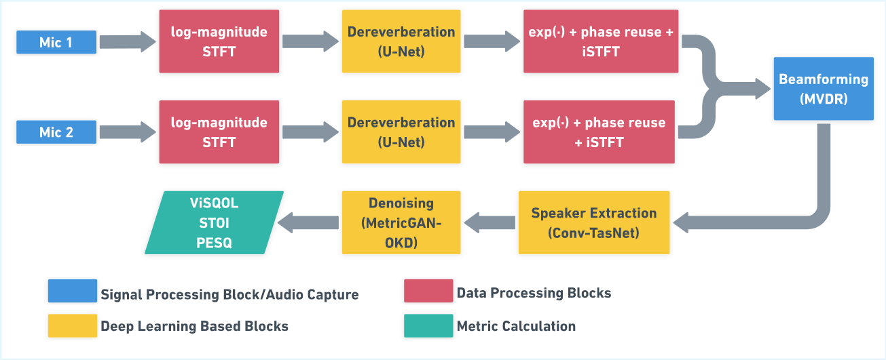

Accepted at IECON 2026
Real-world validation demonstrating robust directional speech enhancement in uncontrolled environments.
Additional testing using noisy real-world recordings (no video).
We introduce SpARZ100, a controlled dataset isolating anechoic and reverberant conditions for systematic benchmarking.
| Method | STOI | ViSQOL | PESQ | Time (s) | Real-Time | Mic Setup | Dataset |
|---|---|---|---|---|---|---|---|
| Anechoic (RT60 = 0.0 s) | |||||||
| RDSE (Dereverb-off) | 0.7754 | 2.0053 | 2.5755 | 3.95 | ✓ | 2-mic | SpARZ100 |
| RDSE (Dereverb-on) | 0.7356 | 2.0482 | 0.8789 | 10.11 | ✓ | 2-mic | SpARZ100 |
| SepFormer [30] | 0.5015 | 1.5779 | 1.6239 | 22.79 | × | 1-mic | SpARZ100 |
| FasNet-TAC [31] | 0.4494 | 1.5670 | 1.0780 | 3.50 | × | 2-mic | SpARZ100 |
| Nair et al. (2019) [1] | 0.7100 | — | 2.0400 | — | × | 6-mic | AVSpeech |
| Li et al. (2025) [23] | 0.8400 | — | 2.0300 | — | × | 2-mic | VoxCeleb2 |
| Ephrat et al. (2018) [4] | — | — | 2.4200 | — | × | 1-mic | TCD-TIMIT |
| Reverberant (RT60 = 0.5 s) | |||||||
| RDSE (Dereverb-off) | 0.5539 | 1.8710 | 1.8185 | 3.69 | ✓ | 2-mic | SpARZ100 |
| RDSE (Dereverb-on) | 0.5391 | 1.9160 | 0.8527 | 6.21 | ✓ | 2-mic | SpARZ100 |
| SepFormer [30] | 0.4761 | 1.8253 | 1.2387 | 25.35 | × | 1-mic | SpARZ100 |
| FasNet-TAC [31] | 0.4332 | 1.5856 | 1.0820 | 3.31 | × | 2-mic | SpARZ100 |
| Nair et al. (2019) [1] | 0.5900 | — | 2.0000 | — | × | 6-mic | AVSpeech |
| Li et al. (2025) [23] | 0.6000 | — | 1.5400 | — | × | 2-mic | VoxCeleb2 |
Table 1: Comparative evaluation against prior work on the SpARZ100 dataset. Inference time is mean seconds per 5-second sample.
Audio-visual zooming on mobile devices is fundamentally constrained by limited microphone count, compute resource, unknown array geometry, and weak assumptions on real-world acoustic conditions. We present RDSE: Real-Time Directional Speech Enhancement Framework, a hybrid pipeline that combines traditional signal processing and modern machine learning methods for dual-microphone low-end smartphones. Unlike tightly coupled AV systems that continuously use visual feeds or embeddings, RDSE decouples visual interaction from feature inference, using camera input solely to parameterize the steering vector for spatial filtering. The proposed system uses four modules: dereverberation network, a beamformer with a temporal convolutional network, and a MetricGAN based denoiser. Extensive evaluation on benchmark data and real-world recordings demonstrates effective zooming without precise geometry calibration.

Figure 2: Block diagram of the proposed RDSE processing pipeline.
The RDSE pipeline integrates classical spatial filtering with modular, pretrained neural enhancement stages in a cascaded architecture operating on dual-microphone audio. The core components include:
@misc{deo2026rdserealtimedirectionalspeech,
title={RDSE: Real-Time Directional Speech Enhancement Framework for Dual-Mic Commodity Smartphones},
author={Chinmay Deo and Danish Mahajan and Soudeep Ghoshal and Himanshu Buckchash},
year={2026},
eprint={2610.12476},
archivePrefix={arXiv},
primaryClass={cs.SD},
url={https://arxiv.org/abs/2610.12476},
}